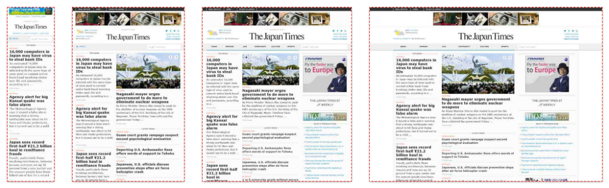
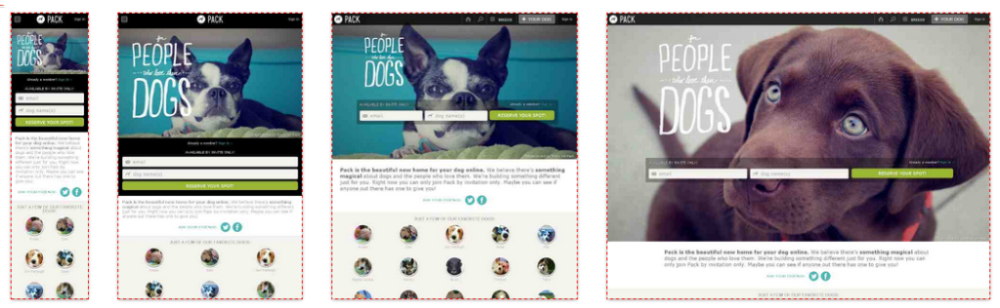

Верстка сайту

Мобільна версія сайту, адаптивний дизайн або гумова верстка?
Всім привіт! Як правило, спілкування з клієнтами, народжуються теми для написання і обговорення статей. Ось, недавно прислали мені завдання на створення сайту з нуля. У ТЗ крім всіх побажань і вимог до сайту було зазначено: верстка сайту адаптивна. Після мого питання, що вони розуміють під адаптивної версткою, мені була дана відповідь, ви ж тут профі, ось і розбирайтеся самі, що це таке, а нам це треба.
Мобільна версія сайту
Адаптивний дизайн
Гумовий тип макета
Здавалося б, елементарна річ, яку, як виявилося, не всі розуміють. Може я не правильно розумію, тому вирішив на цю ж тему задати питання на форумах та соцмережах. Результат в принципі очікуємо – кожен зі своєю думкою і поняттям.Думки були такі:
- адаптивний і реагує дизайн — різні речі
- дизайн, «заточений» під різні пристрої і є «адаптивний»
- підлаштування під розмір вікна браузера — це гумовий тип макета
- різні версії сайту (в тому числі мобільний) — потрапляє під поняття адаптивного дизайну
Мобільна версія сайту
Мобільна версія сайту — це окремий сайт з загальною базою від головного. Також може бути окремий шаблон. Відмітні особливості: власний піддомен (m.site.ru) або папка site.ru/m/). Мобільна версія створена для зручності використання сайту на всяких гаджетах, переважно на смартфонах. Основний принцип: прибрати все зайве (включаючи графіку, другорядний функціонал і т. д.) і полегшити перегляд сайту на мобільних девайсах. Така версія має свій окремої версткою, щодо десктопної версії, окремим дизайном і окремим функціоналом. Простіше кажучи — це окремий сайт (у більшості випадків). Приклади:
В десктопном браузері мобільні версії сайту, звичайно, виглядають не так, як прості версії. Принцип підстановки сайту такий: визначається пристрій або браузер, редиректит на m.site.ru. Про плюси і мінуси можна судити з таблиці, в кінці посту.
Адаптивний дизайн (адаптивна верстка сайту)
Адаптивний дизайн (він же: Чуйний, чуйний, реагує) — це єдиний сайт, який підлаштовується під різну ширину браузера, незалежно від того з якого пристрою відкрито сайт. Багато хто вважає, що адаптивний дизайн реагує на пристрій, проте це не зовсім так. Корені ростуть саме від ширини вікна браузера. У вашого сайту може бути лише одна верстка для всіх варіантів адаптації. Налаштування макету та стилі змінюються в залежності від розмірів області перегляду, за допомогою CSS3 Media Queries (CSS3 медіа запити). Цитата з htmlbook:
Такий макет підлаштовується під дозвіл монітора і вікна браузера, змінюючи при необхідності ширину макета, число колонок, розміри зображень і тексту. Медіа-запити обмежують ширину макета і при досягненні цього значення (наприклад за рахунок зменшення вікна або при перегляді на пристрої з вказаним розміром) вже застосовується інший стиль.
URL сайту залишається незмінним у різних адаптації, т. к. у нас один і той же сайт з однією і тією ж версткою (найчастіше. Бувають також більш складні варіанти). З прикладами можна ознайомитися тут. Ось деякі:

Щоб переконатися в адаптивності і зрозуміти що це таке, відкриємо сайт Time. Тепер стисніть вікно браузера, і посужайте/порасширяйте. Сайт адаптується під ширину вікна: блоки змінюють своє розташування, змінюються стилі типографіки, щось прибирається і т. д.
Сенс в тому, що залежно від розміру вікна браузера ширина колонок і інтервалу між ними може змінюватися, але завжди залишається 12. Ось за цим колонкам весь макет і адаптується, якісь блоки сповзають один під одного, якісь просто зменшують свою ширину, залишаючи текст читабельним і т. д. Почитати про адаптивний дизайн я раджу в книзі “Responsive Web Design” (автор: Ітан Маркотт — чоловік, який придумав поняття “чуйний веб-дизайн”).
Рекомендую до прочитання: Чек-лист по створенню інтернет-магазину
До речі, деякі розділяють поняття “чуйний” і “адаптивний”. Різниця не велика, просто “адаптивний” — більш широке поняття, що включає “чуйний”. Невелика вирізка з вікіпедії, для кращого розуміння:
у дизайні чуйну
- застосування гнучкого макета на основі сітки ( flexible, grid-based layout);
- використання гнучких зображень (flexible images);
- робота з медиазапросами (media queries);
на додаток до цього в адаптивному дизайні
- застосування поступового поліпшення;
- проектування для мобільних пристроїв з самих ранніх етапів
Посилання